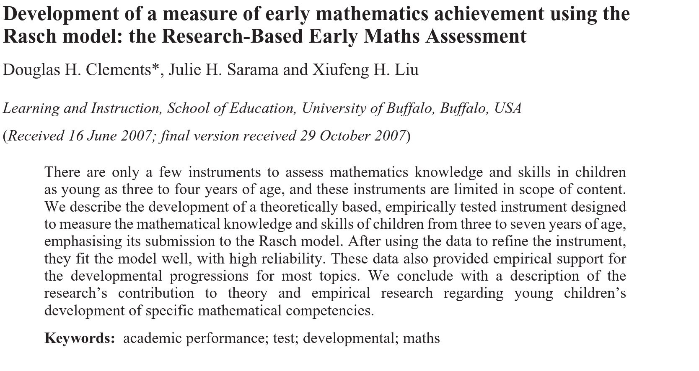
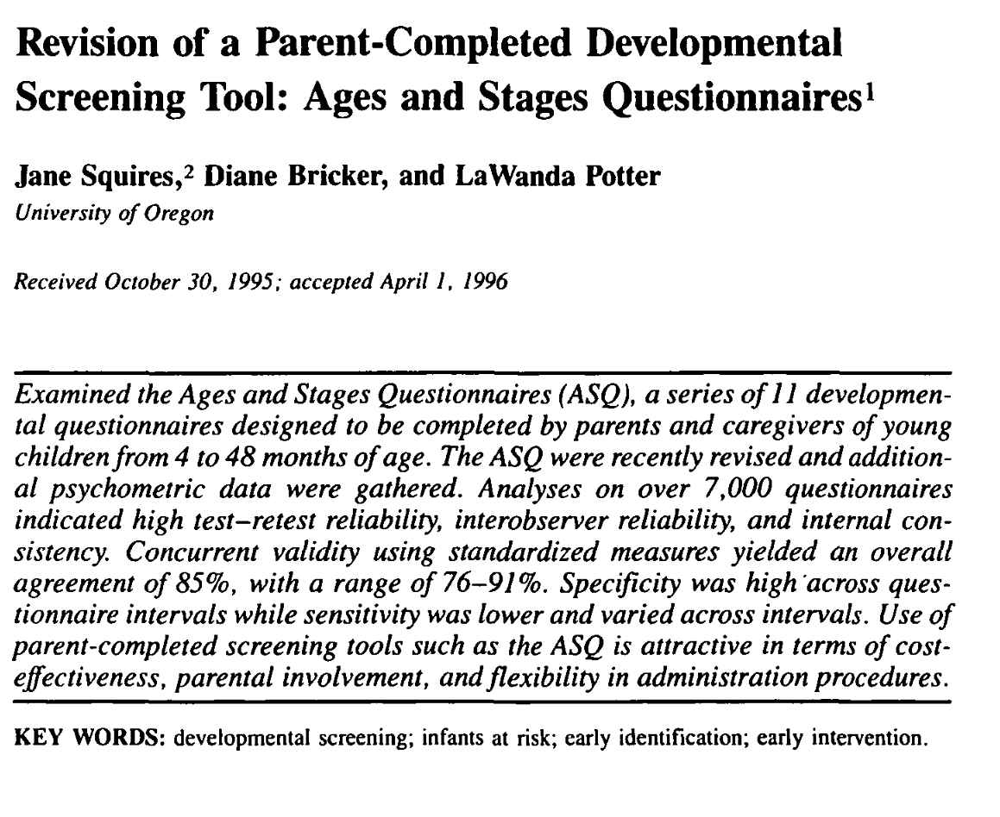
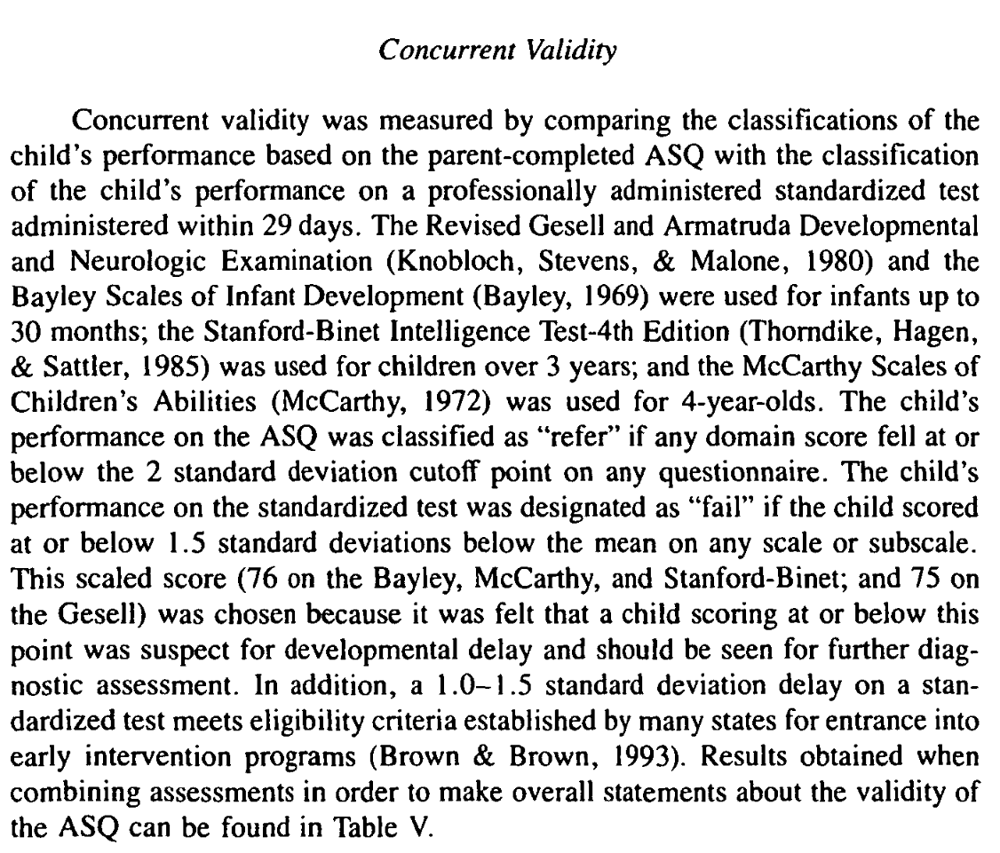
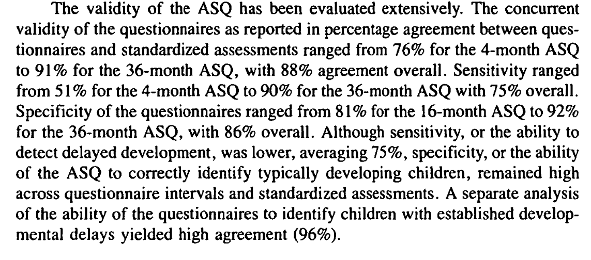

Μεθοδολογία Εκπαιδευτικής Έρευνας (0110Υ)
Χειμερινό εξάμηνο 2025-2026
2025-12-04
Εγκυρότητα
Ορισμός
Η εγκυρότητα αναφέρεται στην ικανότητα του οργάνου να μετρήσει την ποσότητα που στοχεύει.
Η αξιολόγηση της εγκυρότητας:
- Κατανόηση της ερμηνείας που πρέπει να γίνει από το όργανο.
- Συλλογή αποδεικτικών στοιχείων που υποστηρίζουν την ερμηνεία.
Είδη εγκυρότητας
- Εγκυρότητα περιεχομένου
- Εγκυρότητα βάσει κριτηρίων
- Εγκυρότητα εννοιολογικής κατασκευής
- Εγκυρότητα συνεπειών
Εγκυρότητα περιεχομένου
- Είναι ο βαθμός στον οποίο ένα τεστ μετρά μια συγκεκριμένη θεματική περιοχή
- Εγκυρότητα ερωτήσεων: είναι οι ερωτήσεις σχετικές με τη μέτρηση της θεματικής περιοχής;
- Εγκυρότητα δειγματοληψίας: Πόσο καλά ελέγχει το τεστ το σύνολο της θεματικής περιοχής;
Παράδειγμα
Παράδειγμα
Ξεκίνησαν από αναγνώριση του τι θεωρούν οι εκπαιδευτικοί σημαντικό με ανάγνωση της βιβλιογραφίας
Χώρισαν τον τομέα της πρώιμης γνώσης των μαθηματικών σε τομείς:
- Αριθμητική: μέτρημα με λόγια, μέτρημα αντικειμένων, αναγνώριση αριθμών, σύγκριση αριθμών, πρόσθεση και αφαίρεση
- Γεωμετρία: αναγνωριση σχημάτων, σύνθεση και αποσύνθεση σχημάτων, κατασκευή σχημάτων.
- Μέτρηση
- Μοτίβα
Παράδειγμα
- Για κάθε αντικείμενο μελέτησαν την υπάρχουσα έρευνα για να αξιολογήσουν αν και με ποιον τρόπο συνδέεται με την ανάπτυξη των γνώσεων στα μαθηματικά.
- Εκτέλεσαν τα τεστ πιλοτικά και δέχθηκαν κριτική και σχόλια από ομάδα ειδικών.
Εγκυρότητα βάσει κριτηρίων
Καθορίζεται σχετίζοντας την απόδοση σε ένα τεστ με την απόδοση σε ένα δεύτερο τεστ.
Συντρέχουσα εγκυρότητα:
Σύγκριση με προϋπάρχον τεστ που εφαρμόστηκε στα ίδια άτομο την ίδια χρονική περίοδο.
Προβλεπτική εγκυρότητα:
Πόσο καλά μπορεί ένα τεστ να προβλέψει μελλοντική επίδοση.
Παράδειγμα
Παράδειγμα
παράδειγμα
Εγκυρότητα εννοιολογικής κατασκευής
- Τι πραγματικά μετρά το τεστ (όργανο) που χρησιμοποιήσαμε;
- Οι εννοιολογικές κατασκευές βρίσκονται πίσω από τις μεταβλητές.
- Προϋποθέτει την εκτενή συλλογή αποδεικτικών στοιχείων
Παράδειγμα
Παράδειγμα
Η δοκιμασία “Κεφάλι-Πόδια” στοχεύει να αξιολογήσει την αυτορύθμιση του παιδιού
Οι ερευνητές έπρεπε να αποδείξουν ότι η δοκιμασία αξιολογεί αυτορύθμιση και όχι τη γνώση των μερών του σώματος.
Έδειξαν ότι οι επιδόσεις αυξάνονται με την ηλικία και ότι οι επιδόσεις στη συγκεκριμένη δοκιμασία συσχετίζονται με μία άλλη πιο περίπλοκη αξιολόγηση.
Εγκυρότητα συνεπειών
Ο βαθμός στον οποίο ένα όργανο έχει επιβλαβείς επιπτώσεις στον εξεταζόμενο.
Αξιοπιστία
Γενικά
Ορισμός
Αξιοπισία είναι ο βαθμός σταθερότητας στον οποίο ένα τεστ μετρά οτιδήποτε είναι αυτό που μετρά.
Όλες οι βαθμολογίες των τεστ έχουν ένα ποσοστό λάθους.
Η αξιοποιστία συνήθως εκφράζεται αριθμητικά με μία τιμή που κυμαίνεται μεταξύ του 0 και του 1.
Γενικά
Η αξιοπιστία μας πληροφορεί σχετικά με τη σταθερότητα των τιμών που παράγονται από ένα όργανο μέτρησης.
Η εγκυρότητα μας πληροφορεί σχετικά με την καταλληλότητα ενός οργάνου μέτρησης.
Η αξιοπιστία είναι απαραίτητη αλλά όχι επαρκής για την τεκμηρίωση της εγκυρότητας.
Είδη αξιοπιστίας
Σταθερότητα
Ορισμός
Η σταθερότητα ή αλλιώς αξιοπιστία επαναλητπικών μετρήσεων, είναι ο βαθμός στον οποίο οι βαθμολογίες στο ίδιο τεστ είναι σταθερές στον χρόνο.
Η σταθερότητα είναι ιδιαίτερα σημαντική στις περιπτώσεις που οι μετρήσεις χρησιμοποιούνται για να γίνουν προβλέψεις.
Διαδικασία αξιολόγησης
- Χρησιμοποιούμε το όργανο μετρήσης σε μία κατάλληλη ομάδα.
- Ύστερα από ένα εύλογο διάστημα εφαρμόζουμε το ίδιο όργανο μέτρησης στην ίδια ομάδα.
- Συσχετίζουμε τα δύο σύνολα των βαθμολογιών.
- Αξιολογούμε το αποτέλεσμα.
Ζητήματα στην αξιολόγηση της σταθερότητας
Δεν είναι εύκολο να γνωρίζουμε το διάστημα που θα μεσολαβήσει μεταξύ των δύο αξιολογήσεων:
- Αν το διάστημα είναι μικρό, οι εξεταζόμενοι μπορεί να θυμούνται τις απαντήσεις που έδωσαν.
- Αν το διάστημα είναι μεγάλο, τα αποτελέσματα των μετρήσεων μπορεί να έχουν επηρεαστεί από εξωτερικούς παράγοντες.
Συνήθως, ένα διάστημα μεταξύ 2-6 εβδομάδων θεωρείται ικανοποιητικό.
Ισοδυναμία
Ορισμός
Η ισοδυναμία, ή αλλιώς αξιοπιστία ισοδύναμων μορφών, είναι ο βαθμός στον οποίο δύο παρόμοιες μορφές ενός τεστ παράγουν παρόμοιες βαθμολογίες όταν εφαρμόζονται στην ίδια ομάδα ατόμων.
Διαδικασία αξιολόγησης
- Εφαρμόζουμε τη μία μορφή του τεστ σε μία κατάλληλη ομάδα.
- Στην ίδια (ή σε μία κοντινή) συνεδρία, εφαρμόζουμε τη δεύτερη μορφή του τεστ.
- Συσχετίζουμε τις βαθμολογίες.
- Αξιολογούμε τα αποτελέσματα.
Το κυριότερο ζήτημα στην αξιολόγηση της ισοδυναμίας είναι η δυσκολία κατασκευής δύο μορφών του ίδιου τεστ.
Ισοδυναμία και σταθερότητα
Είναι ο συνδυασμός των δύο προηγούμενων μορφών ισοδυναμίας.
Η διαδικασία αξιολόγησης της αξιοπιστίας ισοδυναμίας και σταθερότητας είναι:
- Εφαρμόζουμε τη μία μορφή του τεστ σε μία κατάλληλη ομάδα ατόμων.
- Ύστερα από εύλογο χρονικό διάστημα, εφαρμόζουμε τη δεύτερη μορφή του τεστ στην ίδια ομάδα ατόμων.
- Συσχετίζουμε τα δύο σύνολα βαθμολογιών.
- Αξιολογούμε το αποτέλεσμα
Αξιοπιστία εσωτερικής συνέπειας
Ορισμός
Αξιοπιστία εσωτερικής συνέπειας είναι ο βαθμός στον οποίο οι ερωτήσεις ενός τεστ είναι συνεπείς μεταξύ τους και με το τεστ στο σύνολό του.
Αξιολογούνται με τις εξής προσεγγίσεις:
- Μέθοδος διχοτόμησης
- Μέθοδος Kunder-Richardson
- Το άλφα του Cronbach
Μέθοδος διχοτόμησης
Η διαδικασία αξιολόγησης με τη χρήση της μεθόδου διχοτόμησης είναι:
- Εφαρμόζουμε ολόκληρο το τεστ σε μία ομάδα κατάλληλων ατόμων.
- Χωρίζουμε το τεστ σε δύο συγκρίσιμα μισά, π.χ. μονές και ζυγές ερωτήσεις.
- Συγκρίνουμε τη βαθμολγία κάθε ατόμου στα δύο υπο-τεστ.
- Συσχετίζουμε τα δύο σύνολα των βαθμολογιών.
- Εφαρμόζουμε έναν μαθηματικό τύπο διόρθωσης.
- Αξιολογούμε τα αποτελέσματα.

Μεθοδολογία Εκπαιδευτικής Έρευνας: 9ο Μάθημα